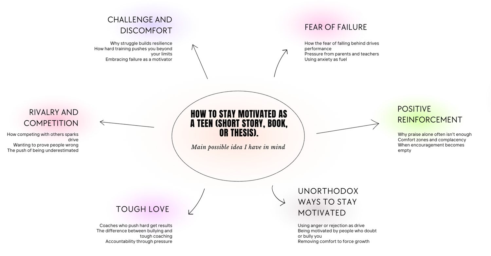
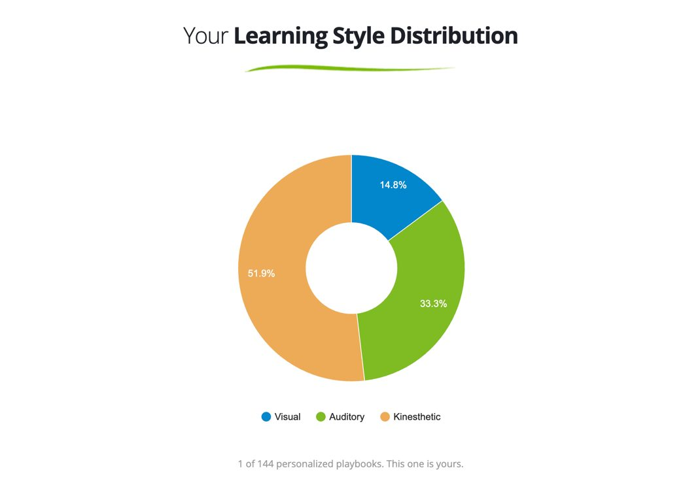
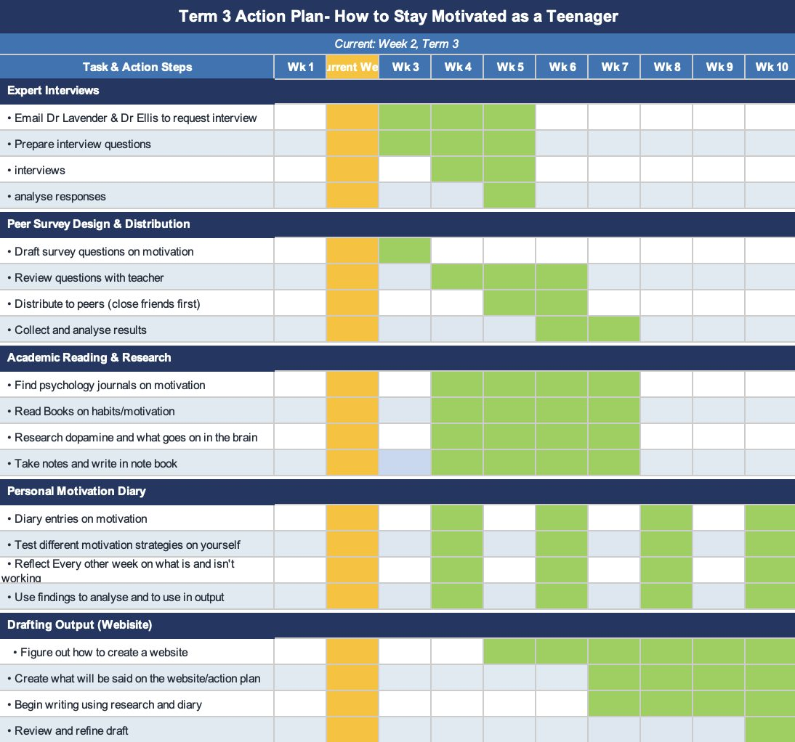
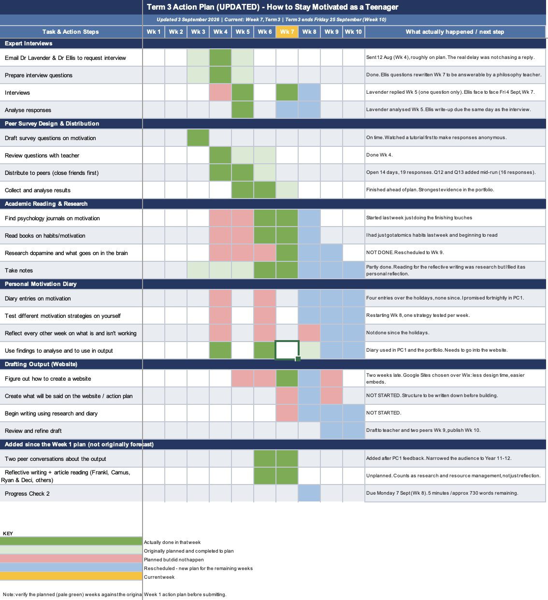

How the project went
The plan against what actually happened, what worked, the feedback I got, and what I got wrong.
The learning goal
I wrote three versions and chose the third, because it covers the science, the psychology, the personal side, and the idea that the same method can help one person and break another. That last point is the most original and honest part of the project, so it had to be in the goal.
To understand what keeps teenagers motivated across different areas of life, explore the science and psychology behind drive and burnout, and explore why the same motivational method can push one person forward while breaking another.
Choosing the output
I started with a lotus diagram and a mind map, which helped me spread across a wide range of topics (gym culture, meal prepping, running, philosophy, social norms and motivation) and then narrow to motivation. I chose it because it fits how I learn (a learning style quiz showed I am a strong kinesthetic learner, so a topic I could test on myself suited me), it sits in the middle of the three subjects I study, English literature, psychology and philosophy, and because I relate to it. I swam competitively and was never truly motivated, yet I go to the gym because I want to, and even there some days I do not want to go. That contradiction is what interested me.


For the output I considered a book, a video and a website. A book would use my English skills but is harder to share and less engaging for teenagers. A video is accessible but cannot hold the depth of research I wanted. A website can hold my research, survey, interviews and diary in one place and is something teenagers would actually read. My class teacher suggested something more accessible than a book, and my careers counsellor recommended a website specifically. That, with my own reflection, made it clear.
Plan against reality
I built an action plan in Week 1 with five areas: expert interviews, the peer survey, academic reading, my diary and the website, across ten weeks. Six weeks later I updated it, so it became a record instead of a forecast.


| Part of the plan | What happened |
|---|---|
| Peer survey | Finished ahead of schedule. Ran 14 days, 19 responses. I added two questions partway through. |
| Psychology teacher | Email went out on time in Week 4. I did not chase it for three weeks. She answered one of five questions. |
| Philosophy teacher | Reply was late. A recess meeting fell through when I was unwell and it moved to 4 September. I did it face to face. |
| Academic reading | Started late. Self-determination theory came first, then the measurement tools, the brain science, two philosophers and Atomic Habits. |
| Diary | Meant to be fortnightly. Four entries over the holidays, then it stopped. |
| Website | I moved it earlier in the plan because I had never built one, and it still slipped. I considered Wix and Google Sites, then chose to build it with the help of an AI tool. |
| Not in the plan | Two peer conversations that narrowed my audience to Year 11 and 12, and reflective writing that turned into real research. |
The pattern. Parts with a deadline or another person waiting, like the survey and the interviews, got done. Parts I left open ended, like the diary and the website, are the ones that stopped. The first delay with my interviews was not the email, which went out on time. It was that I did not chase the reply. Part of it was also taking on too many topics in too short a time, alongside other schoolwork. So my plan was right in Week 1, and what failed was carrying it out. The fix was fixed weekly slots for the open ended tasks, because anything without a date attached is what I drop.
The irony is not lost on me. Atomic Habits argues motivation is unreliable and systems are what get things done. I spent the term researching motivation and then proved his point by relying on mine.
What worked and what did not
- The survey was the most effective strategy, because it told me something I did not expect. I went in thinking pressure was effective but risky and my peers rated it unreliable and risky. Changing it partway through gave me my best evidence.
- The diary was second. It gives me motivation as it happens instead of remembered later. Noticing I trained harder with friends than alone, doing the same workout, is not something I would have got from a book.
- The interviews were the least effective, and the reason was my timing, not the strategy. Anything that depends on someone else has to start early enough that one delay does not turn into a month. The change of format also mattered: moving the philosophy interview from email to face to face let me follow up in the moment, and I could see him change his mind mid-sentence.
- Being sent to a source I would not have found. My psychology teacher's three survey tools, and my philosophy teacher's two philosophers, were reading that came from other people's perspectives instead of my own searching.
Risks and opportunities
- Risk: the website. I named it as my biggest risk in Progress Check 1 and it still slipped. The course puts the output after Progress Check 2, so I was not behind the course. I was behind my own plan.
- Risk: expert access. Whether a teacher replies is out of my control. I turned it into a limitation I would write down and used published research to fill the gap.
- Risk: my sample. 19 Year 11 boys at one school who know me. I describe patterns in my year level and nothing wider.
- Opportunity: meeting in person. The philosophy teacher offering a face to face interview let me follow up in the moment, which is exactly what email cost me.
Feedback, and what I did with it
I had feedback from six places. I did not take all of it. I acted on the feedback that changed a decision.
- My class teacher suggested a video. I turned it down. It was good advice about being accessible, but a video cannot hold survey data, interviews, diary entries and research at the same time, and it is hard to change once it is filmed. I kept the reason behind it, accessibility, and met it with a different format.
- Contacting university professors. I agreed with it and did not do it, because my school interviews had already taken six weeks.
- Progress Check 1 feedback. My thinking process was a strength. The gap was that I did not talk about time management explicitly. I fixed it by showing the timeline as a record, with a reason for every difference, and by showing the reasoning behind my sources.
- Progress Check 2 feedback. Good progress managing time and resources, and good use of expert perspectives, and strategies adapted in response to setbacks.
- An AI review. I asked Claude to read my portfolio and give honest feedback on time management. It was the most specific feedback I had. It said my planning was fine but my execution was not, and that I had been polishing finished work while my reading sat at zero. That was uncomfortable because it was true. I put the tasks I had been avoiding at the front of the last weeks.
The quality of feedback depended on how much of my work each person had seen. My class teacher read a whole Progress Check, so hers was detailed. My peers only heard me talk, so theirs was more general. My psychology teacher had five questions in an email, which is probably part of why she answered one.
Who this site is for
In Progress Check 1 I planned to explain what motivation is and how to build it. The survey changed that. Year 11 and 12 students, because that is when the pressure builds, are not short of a starting point (6.79 out of 10 on a normal day). The thing they need is an explanation of what happens when the thing driving you stops working.
What this site is not: another motivation page telling you to set goals and wake up early. There are hundreds of those, and my own data says it is not the question my year level has. The difference is that this is built on evidence in one place: my survey, my diary, my interviews and published research. And because my peers rated pressure as more harmful than effective, I am not recommending it. I am showing it works for some people and damages others.